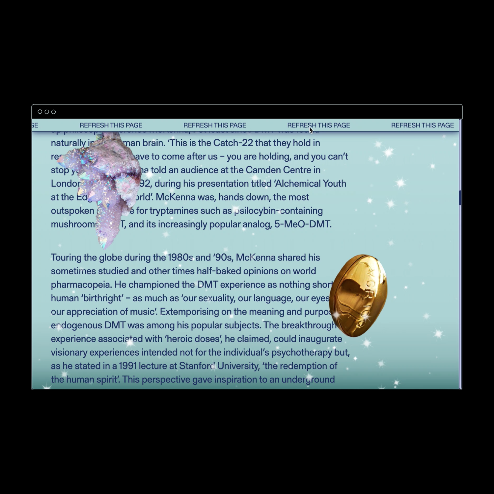
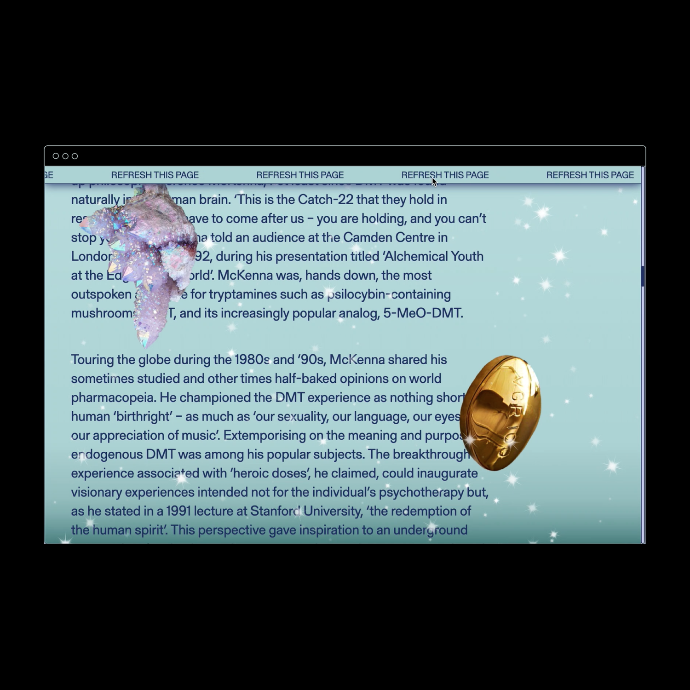

The Spirit Molecule2019
The Spirit Molecule is a microsite exploring the debate around natural psychedelics. A groundbreaking study published in the 1960s suggests that the human pineal gland might produce DMT; six decades later, prominent thinkers continue to fantasize, polemicize, and hypothesize about its potential.
Built to emulate the sensation of tripping, The Spirit Molecule employs a series of variables and algorithms to create a dynamic, ever-changing environment and make each page visit a unique experience.
Featuring words adapted from "The Spirit Molecule"
Written by Graham St. John for Aeon Magazine
 
